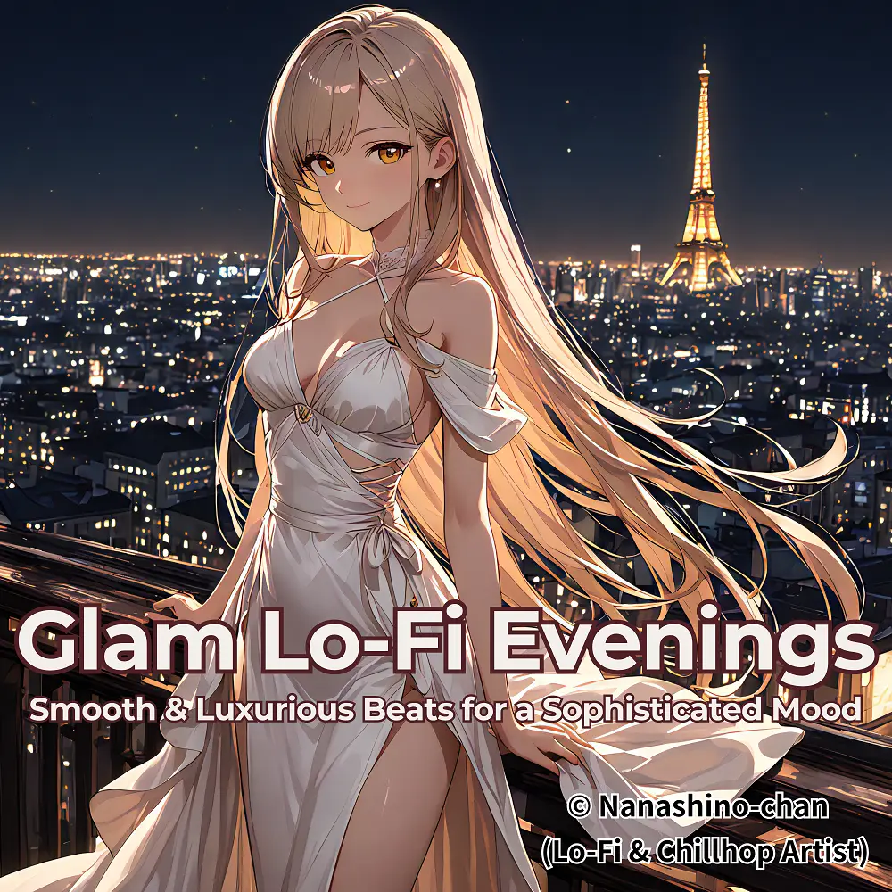

Lo-Fi
Glam Lo-Fi Evenings:Elegant & Relaxing Beats
Nanashino-chan
Nanashino-chanの「Glam Lo-Fi Evenings:Elegant & Relaxing Beats」。Lo-Fiを楽しめる全24曲のインストゥルメンタル作品です。「Shimmering Dawn / Velvet Elegance」などを収録。気になる曲を試聴して、配信サービスでお気に入りを見つけてください。
2025-06-22 リリース · 24 曲 · Instrumental
アルバムを試聴
気になる音楽を、ここから。
曲を選ぶまでジャケットを表示します。試聴にはYouTubeを使用します。
YOUTUBE PREVIEW
試聴する曲を選んでください
曲を選ぶまでジャケットを表示します。試聴にはYouTubeを使用します。
再生できない場合は、配信サービスでアルバムや曲を開いてください。
配信サービスでアルバムを探す
「検索」のリンクは検索結果を開きます。サービス内でアルバムや曲を選択してください。
収録曲一覧 24
- 01Shimmering Dawn
- 02Velvet Elegance
- 03Gold Dust Grooves
- 04Satin Nights
- 05Crystal Reflections
- 06Opulent Waves
- 07Glimmering Twilight
- 08Luxe Moments
- 09Diamond Dreams
- 10Radiant Glow
- 11Polished Beats
- 12Midnight Luxe
- 13Glitz & Glamour
- 14Silken Soundscapes
- 15Jewel Tones
- 16Gilded Breeze
- 17Refined Rhythms
- 18Champagne Vibes
- 19Moonlit Glimmer
- 20Sparkling Echoes
- 21Lustrous Harmony
- 22Chic Reverie
- 23Luxe Serenity
- 24Glamorous Finale
SNSで使いたい音源を探す
「Nanashino-chan ＋ 曲名」をコピーして、SNSアプリの音源検索に貼り付けてください。音源の表示は地域やアカウントにより異なります。コピー機能は利用許諾を付与するものではありません。